Разработка дизайн-системы для Форсайт-центра НИУ ВШЭ
О заказчике
Международный научно-образовательный Форсайт-центр — структурное подразделение Института статистических исследований и экономики знаний НИУ ВШЭ. Основные направления деятельности Центра — применение, развитие и совершенствование методологии форсайта в Роcсии.
Задача
Переработать дизайн старой версии базы экспертов с учетом потребностей сотрудников центра, собрать систему компонентов и сделать базовую верстку для дальнейшей передачи в разработку
Изучение вводных данных
1. Существует гугл таблица со множеством типов данных, которые
нужно перенести и отобразить в базе данных
2. База
предназнается для сотрудников центра, поэтому сегмент проекта можно
определить как B2B: то есть необходим максимальный и понятный
опыт взаимодействия для ограниченной целевой аудитории
3.
Предлагается подумать насчет разного представления информации: допустим,
строки и карточки
Определение типов данных
Первым делом я переношу все типы данных в фигму, где уже с ними будет удобно работать, а также пробую рассуждать о функционале. Нужны ли будут пользователю все типы данных одновременно или стоит предоставить возможность скрывать часть информации? Также предлагаю группировать данные по тематикам (город/страна или имя/фамилия) и включать возможность сортировки по этим группам
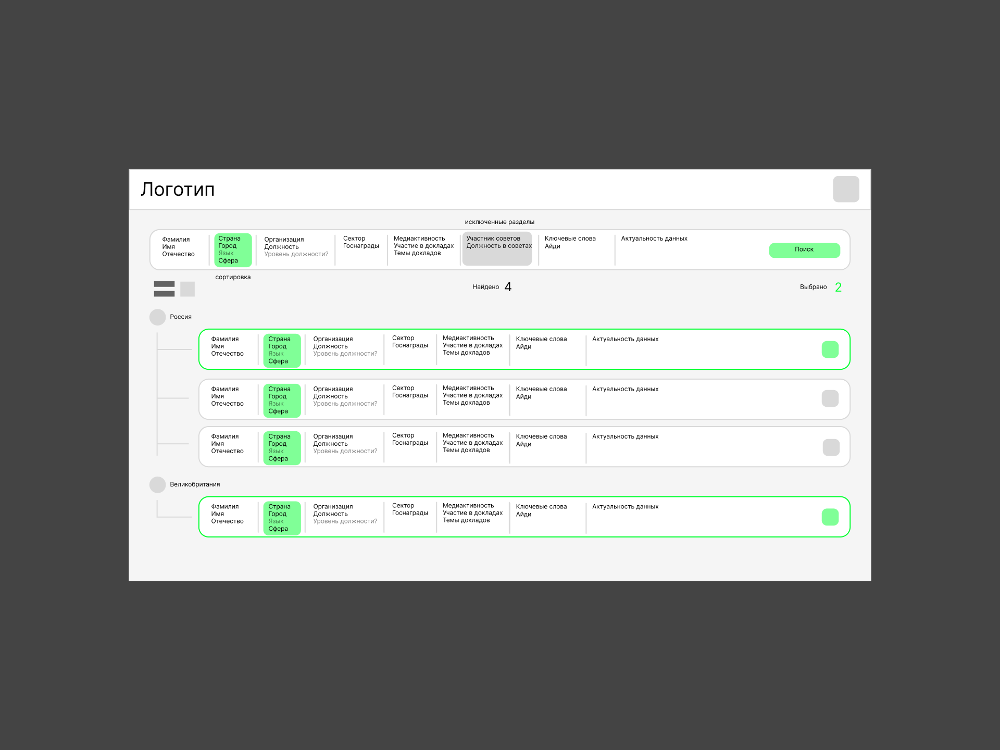
Анатомия базы
После того, как освоился в базе, перехожу к разметке анатомии
базы. Контент занимает бОльшую часть, потому что именно за ним
и приходят в базу. Сверху находятся различные настройки: поиск
и виды информации (строки/карточки). Справа параметры для
фильтрации, логотип и профиль. Правую панель можно скрывать,
высвобождая бОльшее количество места
В предыдущей
версии базы половина параметров была скрыта под кнопкой
«дополнительные параметры». От данного
анти-гуманистического решения я предлагаю отказаться
и предлагаю разбить типы по более осознанным тематическим
группам: общая информация, деятельность, публичная активность и,
по настоянию заказчика, добавить типы актуальности
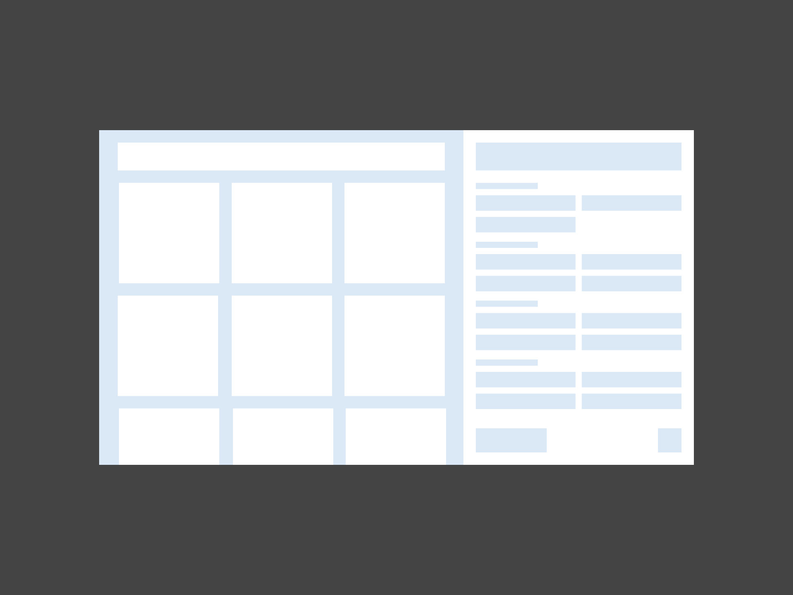
После большого количества экспериментов с группировками и вместимостью прихожу к данному варианту
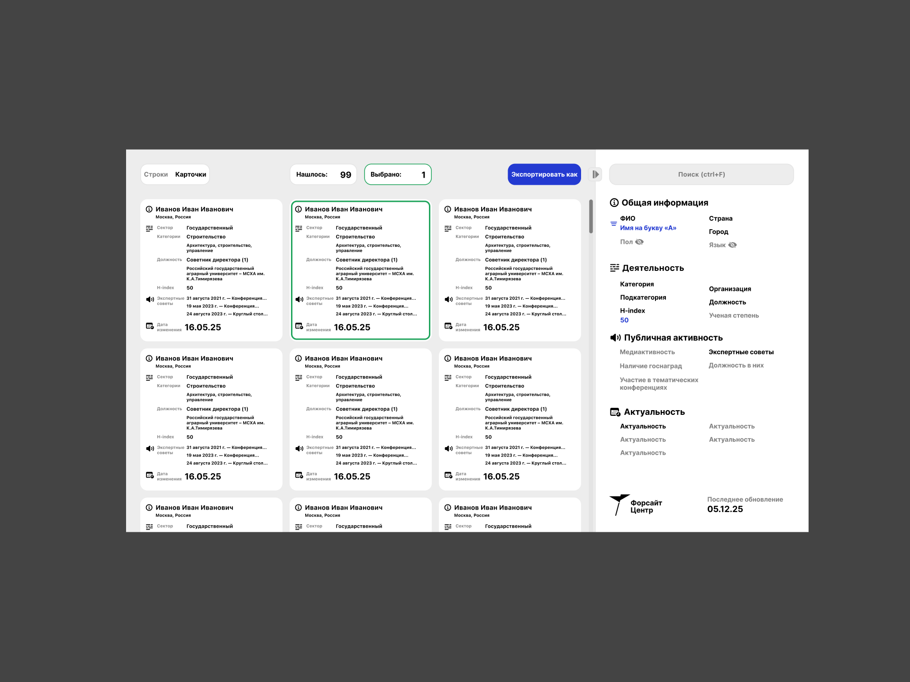
Дизайнерское решение для базы
База построена по принципам иерархичности для быстрого сканирования контента глазами. Для разделения тематических групп используются иконки. Кнопки для отображения фильтрации нет, так как динамическое обновление экономит до 5 секунд времени, при этом, если пользователю понадобится сравнить разные результаты при разных фильтрациях, экономия времени кратно увеличивается Наконец была предложена возможность экспорта в разных форматах
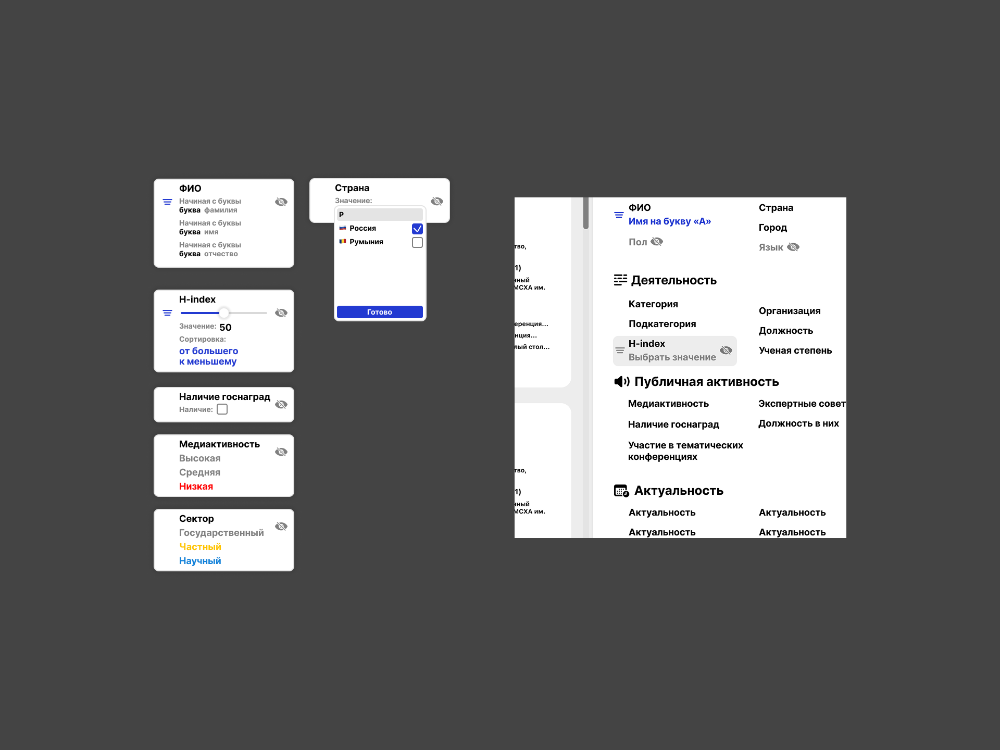
Главной фишкой являются параметры, которые можно скрывать или по которым можно сортировать или фильтровать
Финальный интерфейс
Логика интерфейса не прошла отбор. Были выбраны принципы интерфейса коллеги, которая параллельно работала над проектом. В одной из итераций я предложил свои улучшения
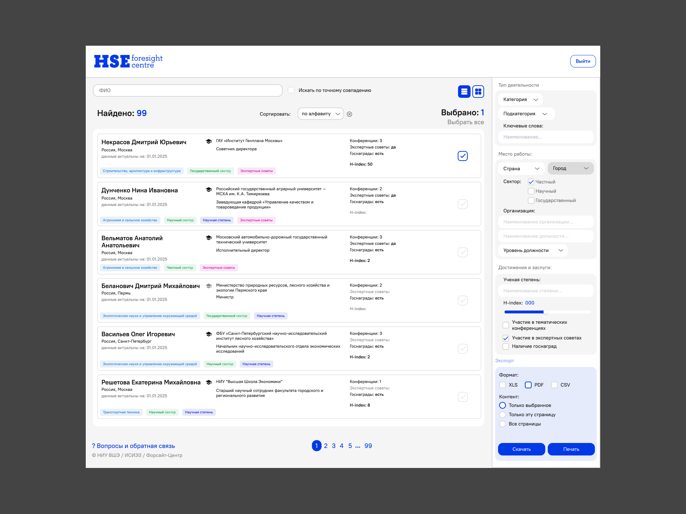
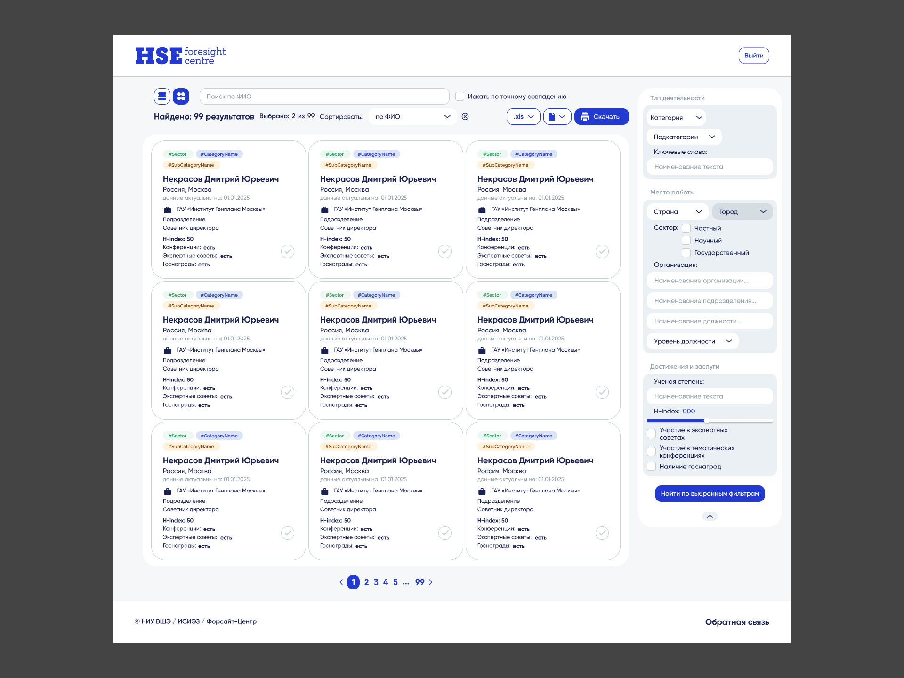
Сборка UI-кита
После того, как пришли к финальному результату, коллега собрала компоненты и затем при помощи плагина собрала документацию для передачи проекта в разработку. Имея опыт сборки компонентов, я подумал, что этот вид антигуманен и из компонентов коллеги начал собирать человекоподобный UI-кит. Для начала провел большую работу по наведению порядка в лейаутах и компонентах
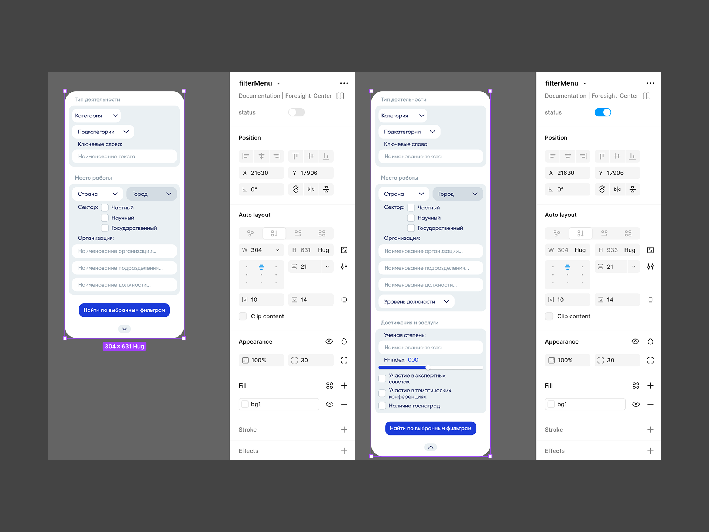
Все компоненты следуют понятной логике вложенности и автолейаутов, которую затем удобно применять на практике в верстке с флексбоксами. То есть, абсолютное позиционирование не предполагается
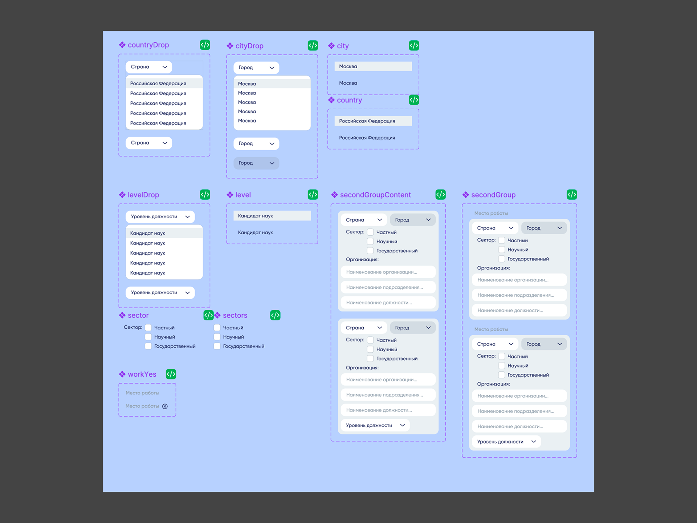
В базовых принципах указана типографика, а также цвета по названиям переменных и иконки
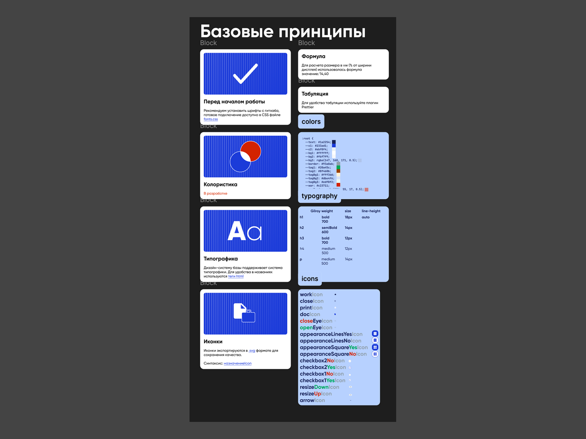
Навигация по файлу засчет единого стиля интуитивная и понятная
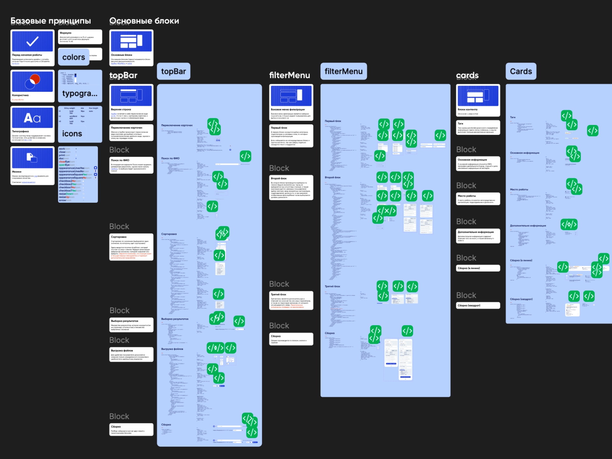
HTML-верстка
Одним из заданий проекта была дальнейшая html-верстка, чтобы разработчики не тратили на нее время. Используя UI-кит, я вручную на html и css собрал mvp базы
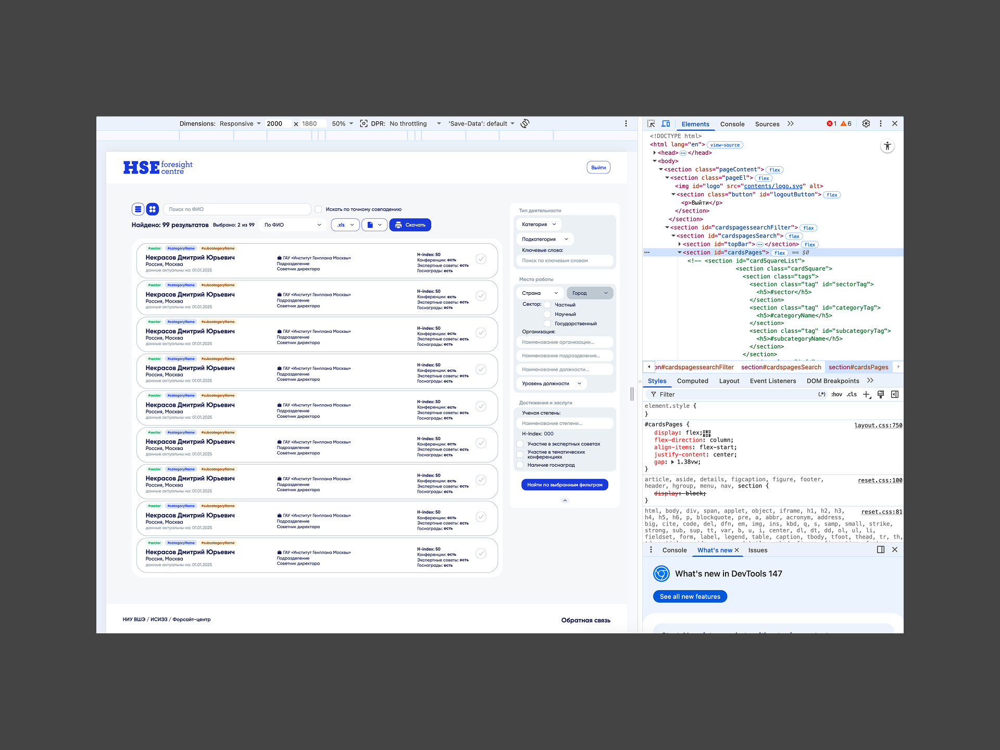
Код находится в открытом доступе в моем профиле GitHub
Согласование проекта продолжается. В свою очередь, проект позволил реализовать потенциал в сборке компонентов и верстке, а также дал базу по работе с B2B сегментом
Ссылка на фигму Ссылка на ГитхабНоябрь 2025 — Март 2026